R6 Class for Distribution Objects
Public fields
xNumeric vector of data values.
nameCharacter string representing the name of the distribution.
parametersList of parameters for the distribution.
sdNumeric value representing the standard deviation of the distribution.
nNumeric value representing the sample size.
loglikNumeric value representing the log-likelihood.
Methods
Method new()
Initialize the fiels of the `Distribution` object
Usage
Distr$new(x, name, parameters, sd, n, loglik)Arguments
xNumeric vector of data values.
nameCharacter string representing the name of the distribution.
parametersList of parameters for the distribution.
sdNumeric value representing the standard deviation of the distribution.
nNumeric value representing the sample size.
loglikNumeric value representing the log-likelihood.
Method plot()
Plot the distribution with histogram and fitted density curve.
Usage
Distr$plot(
main = NULL,
xlab = NULL,
xlim = NULL,
xlim.t = TRUE,
ylab = NULL,
line.col = "red",
fill.col = "lightblue",
border.col = "black",
box = TRUE,
line.width = 1
)Arguments
mainCharacter string for the main title of the plot. Defaults to the name of the distribution.
xlabCharacter string for the x-axis label. Defaults to "x".
xlimNumeric vector specifying the x-axis limits.
xlim.tLogical value specifyind to change the xlim default.
ylabCharacter string for the y-axis label. Defaults to "Density".
line.colCharacter string for the color of the plot line. Default is "red".
fill.colCharacter string for the color of the fill histogram plot line. Default is "lightblue".
border.colCharacter string for the color of the border of the fill histogram plot line. Default is "black".
boxLogical value indicating whether to draw a box with the parameters in the plot. Default is TRUE.
line.widthNumeric value specifying the width of the plot line. Default is 1.
Examples
# Normal
set.seed(123)
data1 <- rnorm(100, mean = 5, sd = 2)
parameters1 <- list(mean = 5, sd = 2)
distr1 <- Distr$new(x = data1, name = "normal", parameters = parameters1,
sd = 2, n = 100, loglik = -120)
distr1$plot()
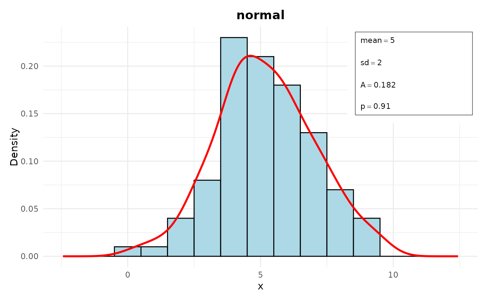
# Log-normal
data2 <- rlnorm(100, meanlog = 1, sdlog = 0.5)
parameters2 <- list(meanlog = 1, sdlog = 0.5)
distr2 <- Distr$new(x = data2, name = "log-normal", parameters = parameters2,
sd = 0.5, n = 100, loglik = -150)
distr2$plot()
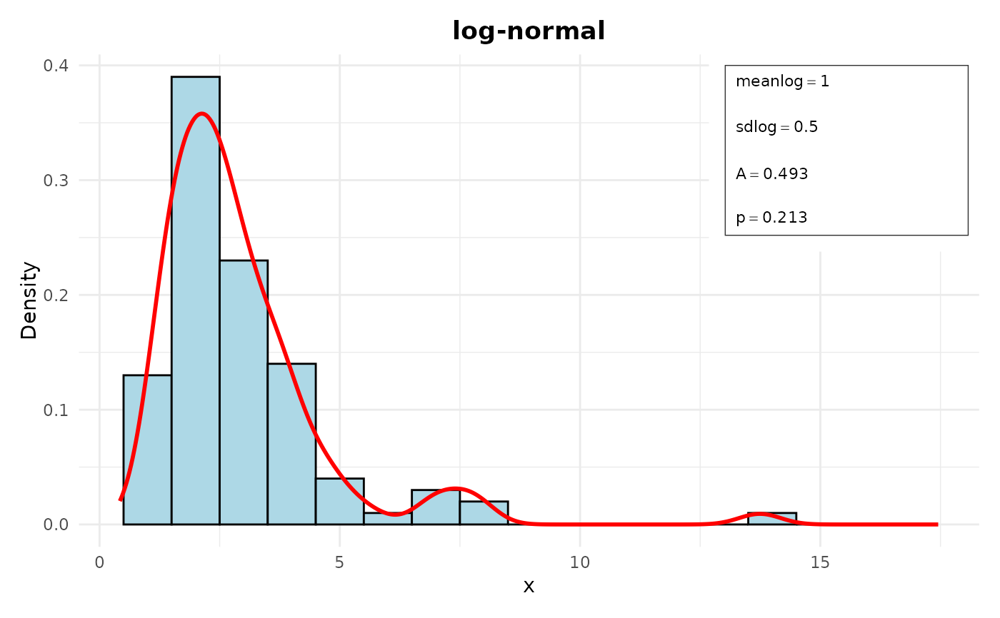
# Geometric
data3 <- rgeom(100, prob = 0.3)
parameters3 <- list(prob = 0.3)
distr3 <- Distr$new(x = data3, name = "geometric", parameters = parameters3,
sd = sqrt((1 - 0.3) / (0.3^2)), n = 100, loglik = -80)
distr3$plot()
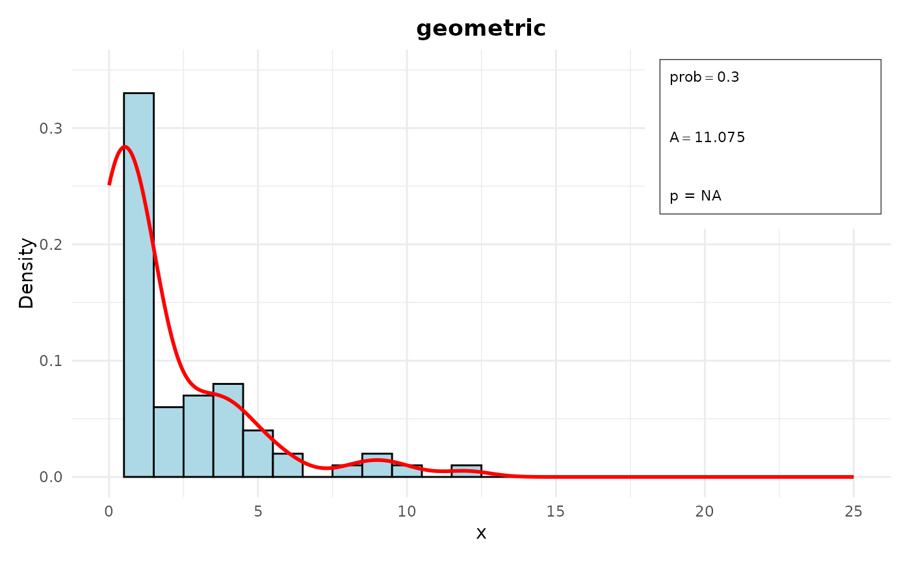
# Exponential
data4 <- rexp(100, rate = 0.2)
parameters4 <- list(rate = 0.2)
distr4 <- Distr$new(x = data4, name = "exponential", parameters = parameters4,
sd = 1 / 0.2, n = 100, loglik = -110)
distr4$plot()
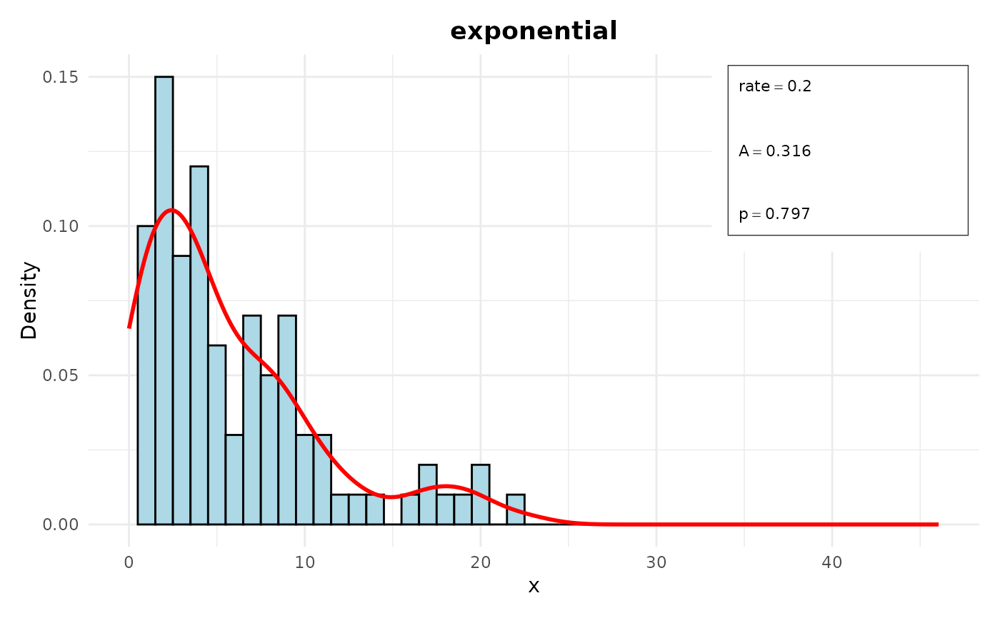
# Poisson
data5 <- rpois(100, lambda = 3)
parameters5 <- list(lambda = 3)
distr5 <- Distr$new(x = data5, name = "poisson", parameters = parameters5,
sd = sqrt(3), n = 100, loglik = -150)
distr5$plot()
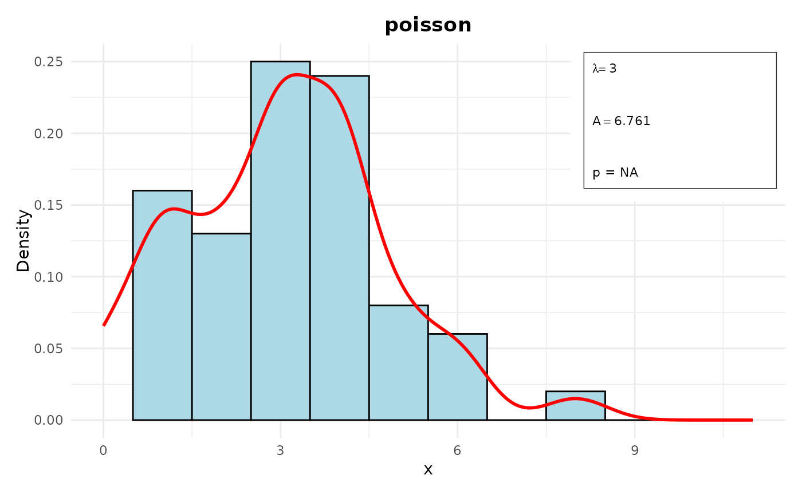
# Chi-square
data6 <- rchisq(100, df = 5)
parameters6 <- list(df = 5)
distr6 <- Distr$new(x = data6, name = "chi-squared", parameters = parameters6,
sd = sqrt(2 * 5), n = 100, loglik = -130)
distr6$plot()
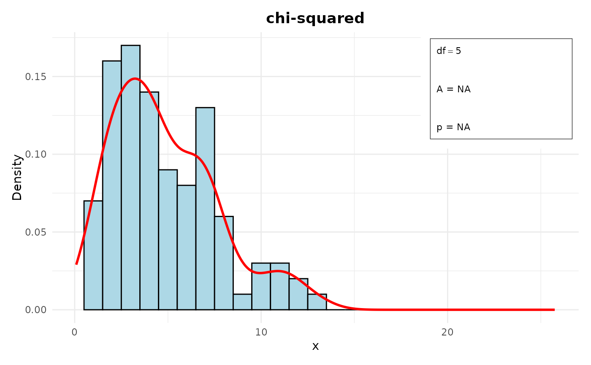
# Logistic
data7 <- rlogis(100, location = 0, scale = 1)
parameters7 <- list(location = 0, scale = 1)
distr7 <- Distr$new(x = data7, name = "logistic", parameters = parameters7,
sd = 1 * sqrt(pi^2 / 3), n = 100, loglik = -140)
distr7$plot()
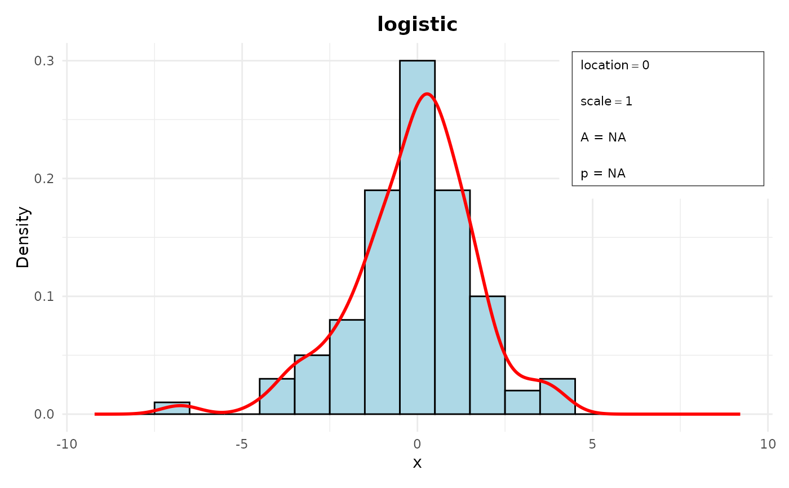
# Gamma
data8 <- rgamma(100, shape = 2, rate = 0.5)
parameters8 <- list(shape = 2, rate = 0.5)
distr8 <- Distr$new(x = data8, name = "gamma", parameters = parameters8,
sd = sqrt(2 / (0.5^2)), n = 100, loglik = -120)
distr8$plot()
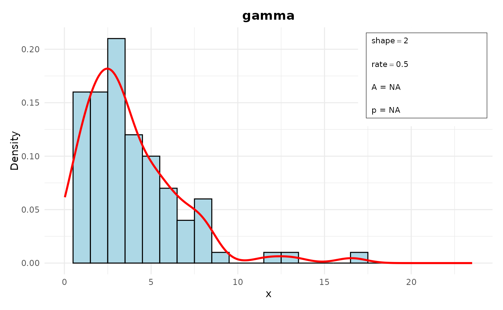
# f
data9 <- rf(100, df1 = 5, df2 = 10)
parameters9 <- list(df1 = 5, df2 = 10)
df1 <- 5
df2 <- 10
distr9 <- Distr$new(x = data9, name = "f", parameters = parameters9,
sd = sqrt(((df2^2 * (df1 + df2 - 2)) /
(df1 * (df2 - 2)^2 * (df2 - 4)))),
n = 100, loglik = -150)
distr9$plot()
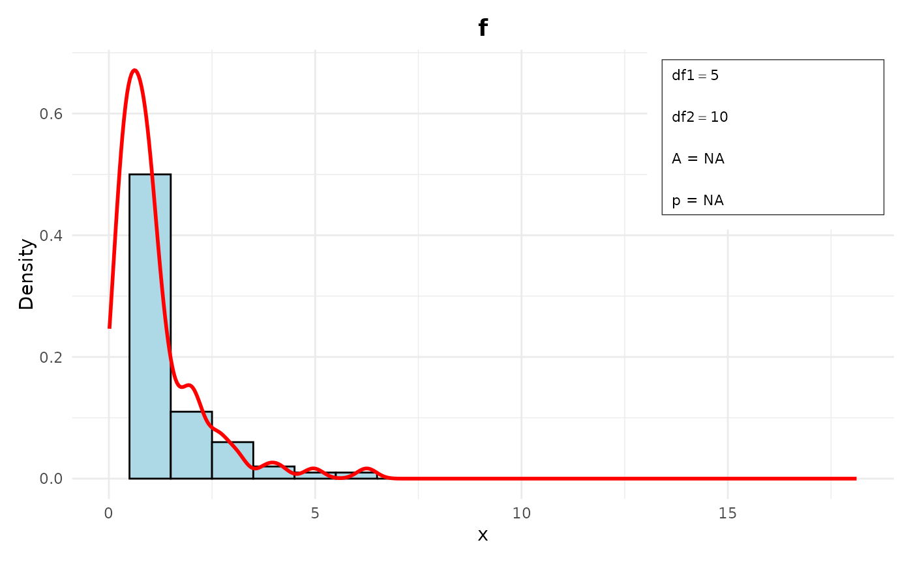
# t
data10 <- rt(100, df = 10)
parameters10 <- list(df = 10)
distr10 <- Distr$new(x = data10, name = "t", parameters = parameters10,
sd = sqrt(10 / (10 - 2)), n = 100, loglik = -120)
distr10$plot()
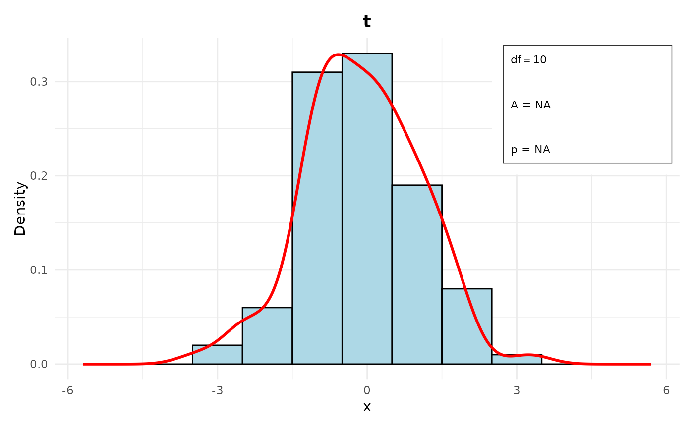
# negative binomial
data11 <- rnbinom(100, size = 5, prob = 0.3)
parameters11 <- list(size = 5, prob = 0.3)
distr11 <- Distr$new(x = data11, name = "negative binomial",
parameters = parameters11,
sd = sqrt(5 * (1 - 0.3) / (0.3^2)),
n = 100, loglik = -130)
distr11$plot()
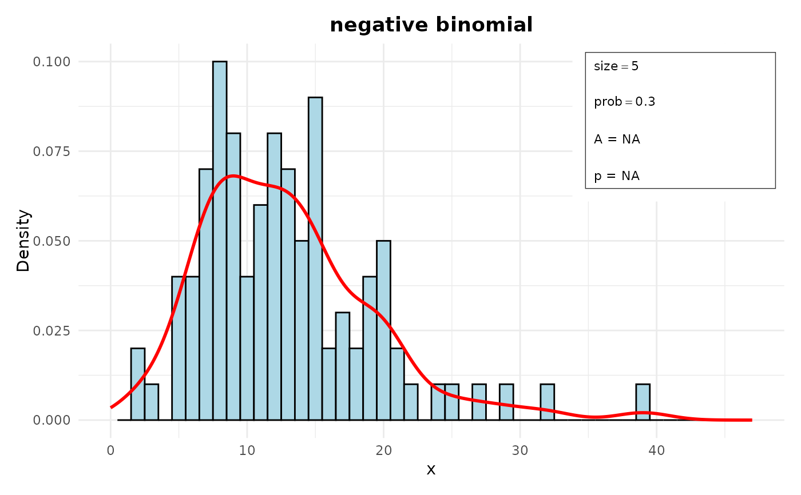